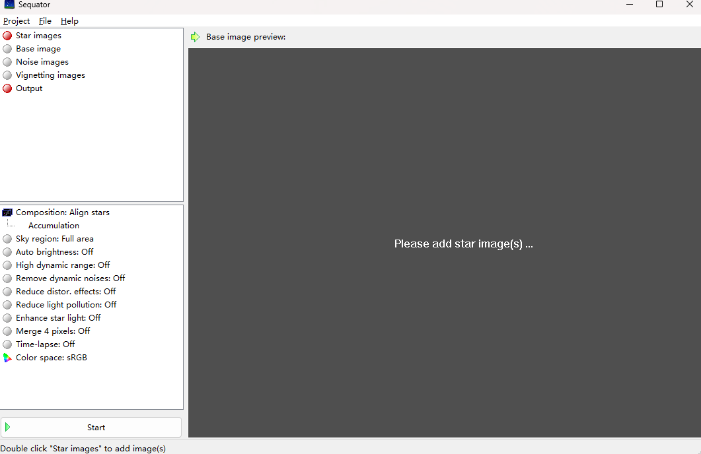
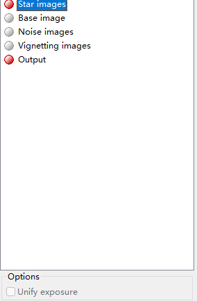

结合官方文档，记录一下sequator软件使用过程中的一些信息。
虽然作者是中国人（台湾的），但不管是软件本身还是文档都没提供中文版本，稍有点坑爹。
Sequator - Manual (google.com)
官方教程
软件页面

软件截图
大致上有三个区域：左上角的文件区，左下角的设置区和右边的工作区。
文件区
用于导入图片和设置输出文件地址的区域
Star images 亮场
顾名思义，放置有星星的照片的地方，天文摄影上称其为亮场。一般而言，star images是一组具有相同焦距、光圈和曝光参数的照片。它们将被堆叠到base image上。
Options-unify exposure

点击star images 后会出现的选项，
[!NOTE] 官方文档
如果您在不同的曝光条件下（例如在不同的夜晚）拍摄图像，则堆叠后会看到明显的矩形边框。“统一曝光”可以缓解问题。
请记住在拍摄时应用相同的曝光参数（ISO、曝光时间），否则“选择最佳像素”或“定格地面”将无法正常工作。如果忘记了，“统一曝光”可以尝试在堆叠时恢复质量问题。
Base image 基准照片
在Star images中选择的一张照片，其他star image会被堆叠到这张照片上。一般会在导入star images的时候自动设置。
Noise image 暗场（可选）
用镜头盖盖拍摄的图像。ISO和曝光时间必须与star images（亮场）相同。这些图像是全黑的，但您可以在它们上观察到一些热像素。Sequator 将尝试在堆叠前消除它们。建议提供噪声图像，以获得更好的星形检测结果并更好地对准。专业人士称噪点图像为“暗场”。
请注意，您必须在拍摄星星图像之前和之后准备噪声图像。因为噪音会随着温度的变化而变化。如果有足够的噪声图像，则将减去暗电流。
建议使用 RAW 文件。
（开始偷懒模式）
Vignetting images 平场（可选）
具有（和star images 亮场）相同焦距和光圈但曝光参数适当的纯彩色图像。暗角图像必须显示镜头的暗角。我们可以通过用白纸/布覆盖均匀的光源来拍摄渐晕图像。或者朝向纯白的墙壁。专业人士称渐晕图像为“平场”。
您可以找到一个名为“均质化渐晕”（Homogenize)的选项。我们有时很难拍摄均匀的渐晕图像。此选项可以平均和模糊 4 个象限的暗角。如果有任何灰尘阴影，则不适用。
或者，您可以使用镜头轮廓校正将照片导出为 TIFF。但镜头轮廓只是镜头的近似模型，它可能无法完美地校正暗角。
Output
输出文件路径。Sequator 支持 16 位 TIFF 和 8 位 JPEG。如果需要后期处理，建议使用 TIFF。
流程
最简单的流程：
- 导入star images
- 设置输出文件路径
剩下两个场如果拍了就导入，没拍就算